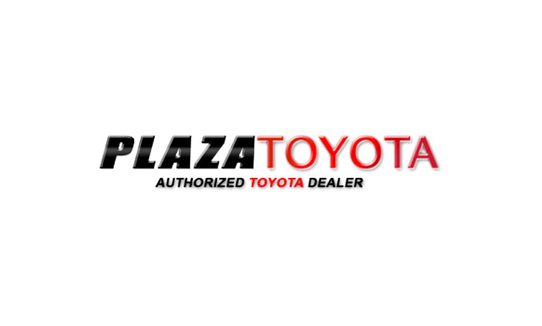
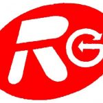
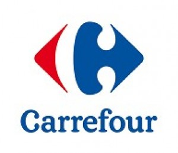

Ari Ardiyansyah
General Affair | Administration | Technical Support
General Affair | Administration | Technical Support
Seorang profesional yang memiliki pengalaman kerja lintas industri mulai dari otomotif, manufaktur, retail, pendidikan, hingga administrasi operasional.
terbiasa menangani pengelolaan fasilitas perusahaan, koordinasi vendor, pengarsipan dokumen serta memastikan operasional berjalan secara efektif dan efisien.
juga memiliki kemampuan teknis dalam maintenance, electrical dasar serta troubleshooting dan didukung kemampuan komunikasi serta leadership yang baik.

Junior Mechanical Engineer (Sep 2015 - Dec 2015)

Machine Operator (Mar 2017 - Apr 2017)

Cashier (Jul 2017 - Nov 2017)
Teacher & Technician (Aug 2018 - Jan 2023)
Business Development Project (Jan 2023 - Aug 2023)
Admin Sales Order (Sep 2023 - Dec 2023)
General Affair (Mar 2024 - Present)
S1 Teknik Informatika
Tahun: 2019 - 2023
IPK: 3.18
Jurusan: Teknik Otomotif
Tahun: 2012 - 2015